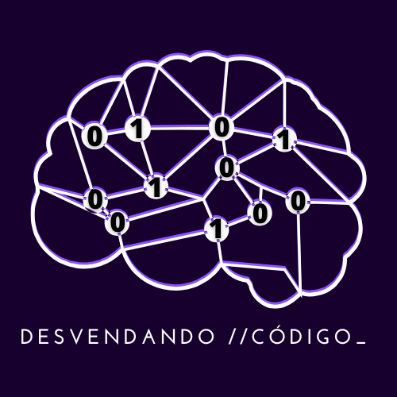

Engenheiro de Dados com raízes em infraestrutura e engenharia de software.
Um repositório de estudos contendo anotações, mapas mentais e exercícios práticos da minha pós-graduação em Computação Quântica.
Vector-Brain é um chatbot inteligente que utiliza LLMs e vetorização de PDF para responder a perguntas contextuais sobre e-books.
Dark-Matter é um ecossistema de dados avançado desenvolvido para estudantes e entusiastas de dados explorarem um ambiente completo usando tecnologias modernas em containers. Este projeto de portfólio demonstra as melhores práticas em orquestração, gerenciamento de data lakes e processamento de big data, tudo encapsulado em containers Docker.
Um projeto simples, porém poderoso, baseado em Python para gerar conjuntos de dados sintéticos de livros fictícios usando Faker e Pydantic. Este projeto é perfeito para testes, aprendizado ou criação de protótipos que envolvem dados estruturados de livros.
Exemplo prático de um data lake com tabelas particionadas utilizando Apache Iceberg.
Disponível em: